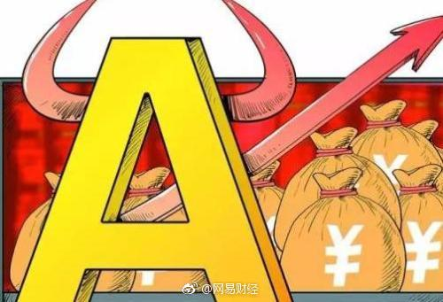

各位放心，我们的7-11国开债指数已经卖的剩一份了 。希望有机会跌下去再买一次
。希望有机会跌下去再买一次
@网易财经:
【债市跌穿牛熊线！跷跷板效应或助阵资金流入股市】经济数据回暖正在侵蚀“债牛”的根基。本周，国债期货持续走弱，并在最后两个交易日以连续盘中跳水的方式，终结了四月的首周表现。从技术上看，十年期国债期货主力合约已经跌穿了120天的牛熊分界线。国债现货市场也呈现出了收益率上行格局。业内人士认为，从大类资产配置看，由于跷跷板效应，债券走弱对于股市十分有利。不过市场对于债市走向依旧存在巨大分歧。周三中午，一则国债中标的新闻扰动了整个市场。由此，债市开启了剧烈波动模式。周三，财政部续发3、7年期国债，中标利率2.7879%、3.2179%，边际利率2.9082%、3.2959%，投标倍数分别为1.52、1.58。该投标结果大幅低于市场预期。受此影响，利率债走弱，国债期货开盘后重挫。 债市跌穿牛熊线！跷跷板效应或助阵资金流入股市
债市跌穿牛熊线！跷跷板效应或助阵资金流入股市
- 